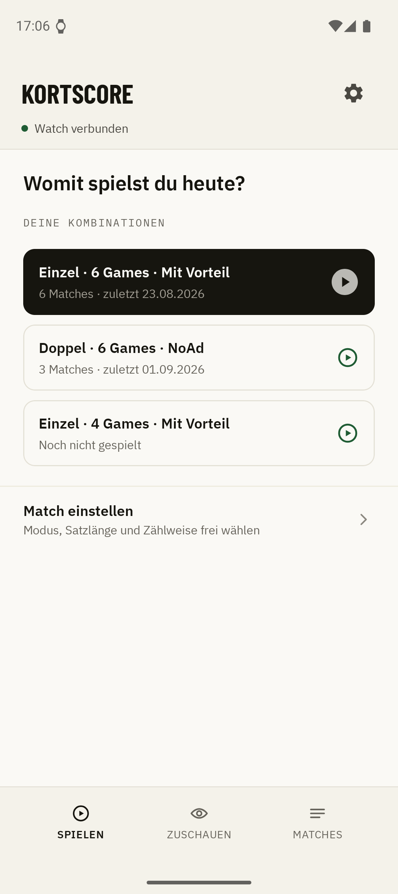
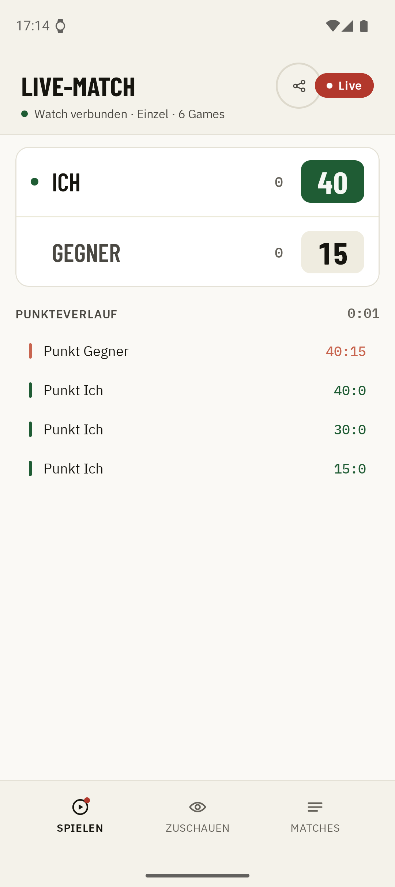
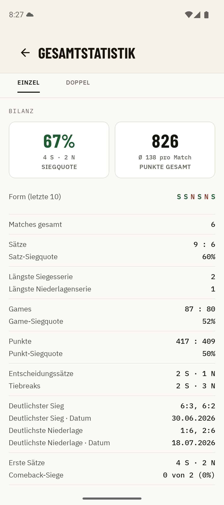
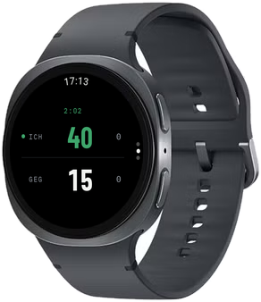

1×
Einfachste Bedienung
Ein Tap auf die Uhr, Punkt gezählt. Zweimal für den Gegner, viermal für Undo. Kein Blick aufs Display nötig, kein unterbrochenes Spiel.
Tennis & Padel · Handy & Uhr
Kortscore zählt dein Tennis- oder Padelmatch am Handgelenk mit, Punkt für Punkt, ohne das Spiel zu unterbrechen. Und wer nicht auf dem Platz steht, schaut live zu.




1×
Ein Tap auf die Uhr, Punkt gezählt. Zweimal für den Gegner, viermal für Undo. Kein Blick aufs Display nötig, kein unterbrochenes Spiel.
67%
Siegquote, Satzbilanz, Punkteverlauf jedes Matches: deine gesamte Match-Historie, automatisch ausgewertet.
Live
Familie, Freunde und Vereinskollegen verfolgen dein Match in Echtzeit am Handy, Punkt für Punkt, von überall.
0 €
Zählen, Historie und Live-Ticker kosten nichts. Wer tiefer auswerten will, holt sich Kortscore Plus.
01
Format wählen, oder einfach die letzte Kombination antippen. Einzel, Doppel, NoAd, Best of 3, ein Satz: alles geht.
02
Die Uhr zählt Punkte, Games und Sätze nach echten Tennis- und Padelregeln, inklusive Tiebreak und Champions-Tiebreak.
03
Das Match landet automatisch in deiner Historie am Handy, mit Score in Broadcast-Notation, Dauer und Punkteverlauf.
Auch für Padel
Padel zählt wie Tennis: 15, 30, 40, Game, Satz. Deshalb braucht Kortscore dafür keine Extrawurst, die Uhr zählt einfach mit. Ein Tap pro Punkt, am Platz, ohne das Spiel zu unterbrechen.
Für Vereine & Meisterschaft
Bei Meisterschaftsspielen laufen mehrere Matches gleichzeitig, und keiner kann überall sein. Mit dem Live-Ticker verfolgen Mannschaft, Kapitän und Fans jedes Match in Echtzeit: vom Nebenplatz, aus der Kantine oder von zu Hause.
iPhone & Apple Watch
Kortscore läuft heute auf Android und Wear OS. Eine iOS-Version wird über die nächste Zeit auch umgesetzt werden. Setz dich auf die Warteliste und wir informieren dich, sobald es die erste Version zum Testen gibt.
Kein Newsletter · keine Weitergabe · Datenschutz
Gratis für Wear OS und Android. In zwei Minuten startklar.

Wear OS 3+ · Android 8.0+ · keine Werbung, kein Konto